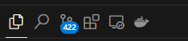
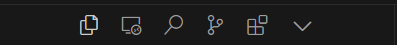

VS Code、Cursor和WindSurf：三款AI辅助编程工具的对比及打分 - VS Code, Cursor, and WindSurf：A Comparison and Rating of Three AI-Assisted Programming Tools
VSCode（配合GitHub Copilot），Cursor，和WindSurf是三种常见的AI辅助的代码编辑软件。它们的界面风格和功能（特指AI功能）大同小异，使用体验上也有很多相似之处。本人已处在选择困难状态长达半年之久，故对这三种软件的界面风格和功能进行了对比及打分，让本人可以做出选择，也供读者参考。
VSCode (with GitHub Copilot), Cursor, and WindSurf are three common AI-assisted code editing software. They share similar interface styles and features (specifically AI features), with comparable user experiences. Having been in a state of decision paralysis for half a year, I've compared and rated these software's interface styles and features to help make a choice and provide reference for readers.
价格 - Pricing
这三个软件都可以免费使用，但VSCode的GitHub Copilot一个月10美元，Cursor会员一个月20美元，WindSurf会员是一个月15美元。Cursor扣10分，WindSurf扣5分。
All three software are free to use, but GitHub Copilot for VSCode costs 10 USD/month, Cursor premium is 20 USD/month, and WindSurf premium is 15 USD/month. Cursor loses 10 points, WindSurf loses 5 points.
AI功能 - AI Features
代码自动补全 - Code Autocompletion
我使用代码自动补全（Autocompletion）的功能相当频繁，因为我总是有一些编写软件的输入文件的需求。VSCode的GitHub Copilot的代码自动补全功能很不错，智商也在线。Cursor的代码自动补全功能有点弱，需要手动修改，但它可以在一段话中间补全，且Cursor Tab可以修改已经写过的句子/代码的错误。WindSurf的代码自动补全有点...不太智能，并且有时候调用不出来，也许是模型的问题。WindSurf扣5分。
I frequently use code autocompletion as I often need to write input files for software. VSCode's GitHub Copilot has excellent autocompletion and shows good intelligence. Cursor's autocompletion is somewhat weak and requires manual modifications, but it can complete code mid-sentence, and "Cursor tab" can fix errors in existing sentences/code. WindSurf's autocompletion is somewhat... not so intelligent, and sometimes fails to respond, perhaps due to model issues. WindSurf loses 5 points.
Cursor Tab确实很舒服，虽说有时候有点智障，但是整体而言能够省掉很多手动修改的精力。VSCode和WindSurf扣10分。
"Cursor tab" feature is indeed comfortable to use, and although it can be a bit silly sometimes, it overall saves a lot of manual editing effort. VSCode and WindSurf lose 10 points.
段内内联修改（ctrl+k）- Inline Modifications (ctrl+k)
VSCode和Cursor可以使用GPT-O1和GPT-4O，Claude 3.5-Sonnet。而WindSurf只能使用GPT-4O和Claude 3.5-Sonnet。WindSurf扣5分。
VSCode and Cursor can use GPT-O1, GPT-4O, and Claude 3.5-Sonnet. WindSurf can only use GPT-4O and Claude 3.5-Sonnet. WindSurf loses 5 points.
聊天/编辑（ctrl+l）- Chat/Composer (ctrl+l)
Cursor和WindSurf有一个非常明显的优点：当对一篇文章或代码进行多处修改时，可以逐条选择接受或拒绝每一条修改意见，而GitHub Copilot只能全部接受或全部拒绝。VSCode扣15分。
Cursor and WindSurf have a significant advantage: when making multiple modifications to an article or code, you can selectively accept or reject each modification, while GitHub Copilot only allows accepting or rejecting all changes at once. VSCode loses 15 points.
界面风格 - Interface Style
三款软件的界面风格几乎一致。唯一的不可修改的区别在于左上角侧栏目录（Primary Side Bar）的不同。VSCode和WindSurf的如下所示：
The interface styles of all three software are almost identical. The only non-modifiable difference is in the Primary side bar layout in the upper left corner. VSCode and WindSurf's layout is shown below:

而Cursor的如下所示：
While Cursor's layout is shown below:

说实在的，VSCode和WindSurf的侧栏目录的设计更简洁，且与副侧栏目录的风格更一致。而Cursor的不能拖动，有时候寻找某个侧栏很不方便，想要设置只能通过修改JSON来实现（如下所示）。给Cursor设计师的傲慢扣2分。
Honestly, VSCode and WindSurf's sidebar design is more concise and consistent with the secondary sidebar style. Cursor's sidebar cannot be dragged, making it inconvenient to find specific sidebars sometimes, and settings can only be modified through JSON (as shown below). Deducting 2 points for Cursor designers' arrogance.
"workbench.activityBar.orientation": "vertical",
其他 - Others
本人有一个非常高频的需求，即登录需要密码的远程SSH服务器。VSCode和Cursor都必须进入手动点击消息弹出窗口中的Detail，然后手动在终端输入密码。只有WindSurf可以弹出一个窗口，优雅地输入密码。VSCode和Cursor扣10分。
I have a very frequent need to log into password-protected remote SSH servers. VSCode and Cursor both require manually clicking details in the message popup window and then manually entering the password in the terminal. Only WindSurf can pop up a window for elegant password input. VSCode and Cursor lose 10 points.
但是不知道为什么WindSurf在弹出窗口时会一并弹出一个黑色的控制行终端窗口，挡住密码窗口，给智障WindSurf也扣2分。
However, for some reason, WindSurf also pops up a black command-line terminal window that blocks the password window, so WindSurf also loses 2 points.
总分 - Final Score
满分100分，VSCode 65分，Cursor 78分，WindSurf 73分。Cursor以微弱优势胜出。
Out of 100 points, VSCode scores 65, Cursor scores 78, and WindSurf scores 73. Cursor wins by a narrow margin.